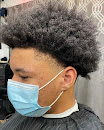
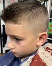
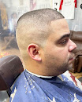
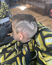
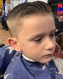
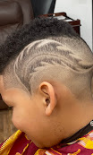

Classic & modern cuts
Clean, tailored styles finished with attention to every detail.
Old school craft. Modern style.
Classic and modern haircuts for men and kids, clean shaves, and the kind of neighborhood shop where the conversation is always free.
Inside the shop
Wise Guys is an old-fashioned neighborhood barbershop built around skilled hands, straight talk, and making every customer feel at home. Come in for a dependable cut, a traditional shave, or a fresh style for the next generation.


What we do
From timeless cuts and straight-razor shaves to current styles for men and kids, our barbers take the time to get it right. The atmosphere is laid-back, the work is precise, and everyone is welcome.
Clean, tailored styles finished with attention to every detail.
Old-school technique for a smooth, close, polished finish.
A patient, comfortable experience for customers of every age.
Cuts from the chair
Sharp fades, clean lines, classic shapes, and modern finishes—made right here in Milford.






Word around town
Come see us
Walk in, give us a call, or stop by the shop on East Harford Street in the heart of Milford.
Shop hours
7 days a week